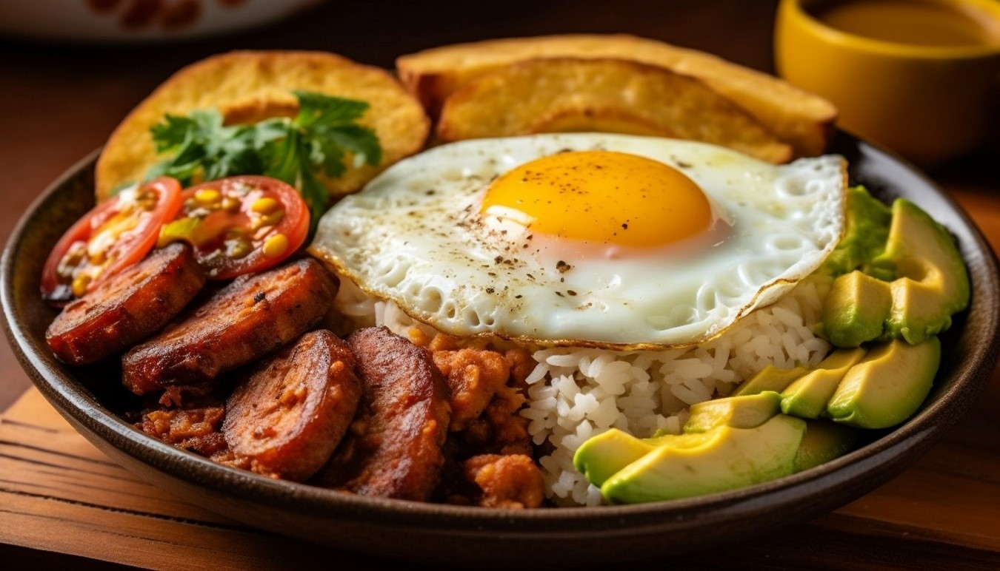

Bandeja Paisa
Región Andina • Colombia

Historia y Tradición
La bandeja paisa es uno de los platos más representativos de la gastronomía de la región Andina, especialmente de Antioquia y el Eje Cafetero. Se caracteriza por ser una preparación abundante que reúne diferentes alimentos como fríjoles, arroz, carne molida, chicharrón, chorizo, huevo, plátano maduro, aguacate y arepa. Su composición refleja una tradición campesina en la que se buscaba proporcionar suficiente energía para las largas jornadas de trabajo agrícola. Culturalmente, representa la generosidad, abundancia y tradición familiar de la cultura paisa, y actualmente es reconocida como uno de los referentes de la identidad gastronómica colombiana.
Ingredientes
- 150 g. de frijoles cocinados con un pocillo de hogao o guiso
- 500 g. de carne de res, molida
- 1 pocillo de hogao o guiso
- 500 g. de tocineta cortada en cuatro trozos
- Arroz blanco
- Patacones
- Arepas
- Aguacate
- Huevos
- Aceite
Preparación
- Fría la carne en un poco de aceite, agregue el hogao y cocine durante unos minutos, revolviendo de vez en cuando con una cuchara de madera.
- A continuación, fría los trozos de tocineta en su propia grasa, hasta que esté tostada y se haga chicharrón.
- Seguidamente, prepare el arroz blanco, los patacones y las arepas y guarde aparte.
- Corte el aguacate por la mitad. Reparta todos los ingredientes preparados en bandejas individuales.
- Por último, fría los huevos en aceite, ponga uno en cada bandeja y sirva.